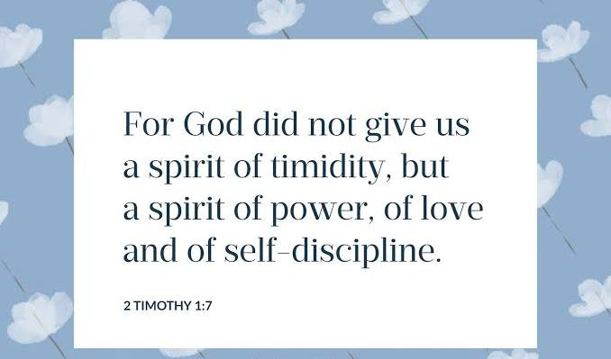
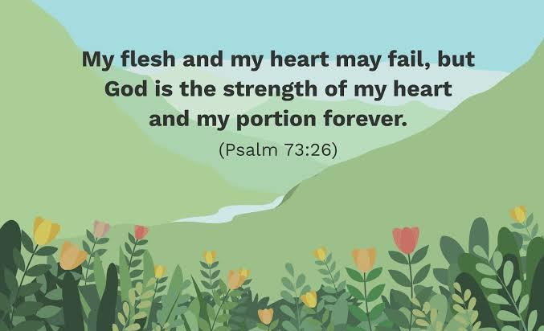
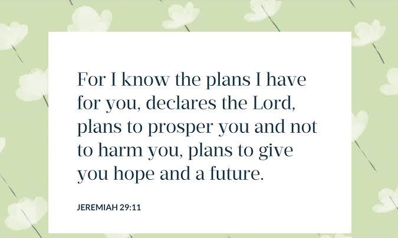
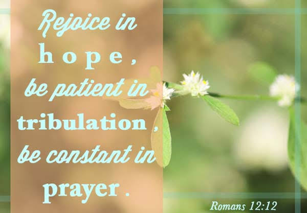
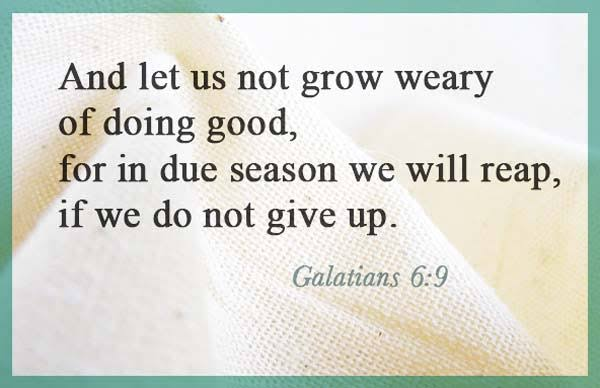

Daily Bible Verses

A Prayer for Spiritual Strength
Ephesians 3 : 14 - 21 - KJV
14. For this cause I bow my knees unto the Father of our Lord Jesus Christ,
15. Of whom the whole family in heaven and earth is named,
16. That he would grant you, according to the riches of his glory, to be strengthened with might by his Spirit in the inner man;

17. That Christ may dwell in your hearts by faith; that ye, being rooted and grounded in love,
18. May be able to comprehend with all saints what is the breadth, and length, and depth, and height;
19. And to know the love of Christ, which passeth knowledge, that ye might be filled with all the fulness of God.
20. Now unto him that is able to do exceeding abundantly above all that we ask or think, according to the power that worketh in us,
21. Unto him be glory in the church by Christ Jesus throughout all ages, world without end. Amen.

Blessings Through Tithing
Malachi 3 : 10 - 12 - KJV
10. Bring ye all the tithes into the storehouse, that there may be meat in mine house, and prove me now herewith, saith the LORD of hosts, if I will not open you the windows of heaven, and pour you out a blessing, that there shall not be room enough to receive it.

11. And I will rebuke the devourer for your sakes, and he shall not destroy the fruits of your ground; neither shall your vine cast her fruit before the time in the field, saith the LORD of hosts.
12. And all nations shall call you blessed: for ye shall be a delightsome land, saith the LORD of hosts.
A Prayer - Show Me Your Ways, O Lord
Psalm 25 : 4 - 7 - KJV
4. Shew me thy ways, O LORD; teach me thy paths.
5. Lead me in thy truth, and teach me: for thou art the God of my salvation; on thee do I wait all the day.
6. Remember, O LORD, thy tender mercies and thy lovingkindnesses; for they have been ever of old.
7. Remember not the sins of my youth, nor my transgressions: according to thy mercy remember thou me for thy goodness' sake, O LORD, amen.

The Beatitudes
Matthew 5 : 2 - 12 - KJV
2. And he opened his mouth, and taught them, saying,
3. Blessed are the poor in spirit: for theirs is the kingdom of heaven.
4. Blessed are they that mourn: for they shall be comforted.
5. Blessed are the meek: for they shall inherit the earth.
6. Blessed are they which do hunger and thirst after righteousness: for they shall be filled.
7. Blessed are the merciful: for they shall obtain mercy.
8. Blessed are the pure in heart: for they shall see God.
9. Blessed are the peacemakers: for they shall be called the children of God.
10. Blessed are they which are persecuted for righteousness' sake: for theirs is the kingdom of heaven.
11. Blessed are ye, when men shall revile you, and persecute you, and shall say all manner of evil against you falsely, for my sake.
12 Rejoice, and be exceeding glad: for great is your reward in heaven: for so persecuted they the prophets which were before you.

Thank you for reading. Please stay safe and connect for more Daily Bible Verses.